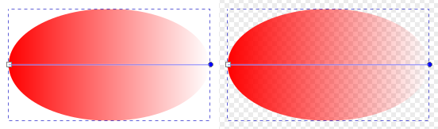
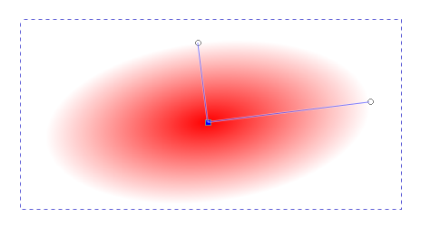
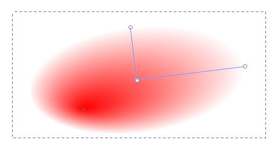
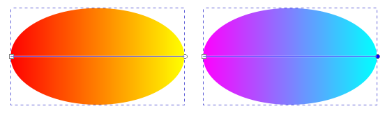
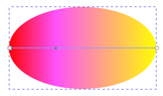
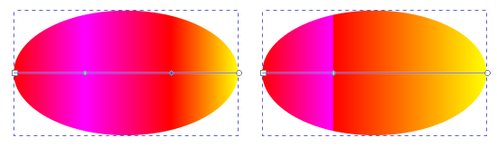
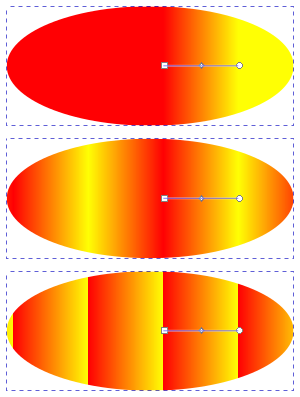
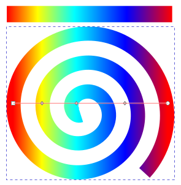

渐变工具
快捷键：G 或者 Ctrl+F1
渐变工具( )用来创建渐变，渐变可以应用于填充，也可以应用于描边。
{kind=link}
渐变由渐变路径及路径上的色标来控制渐变效果：渐变路径控制渐变的范围/方向；渐变路径上的色标控制具体的颜色变化及渐变的层次。
操作方法
选中一个对象，比如选中一个椭圆形；
鼠标在椭圆形中点击并拖动一段距离，然后松开鼠标即可；
从左到右的线性渐变 ：左侧为白色画布背景 ，右侧为棋盘方格画布背景
(在椭圆形区域外拖动鼠标也可以，但效果有所不同)
(默认会使用线性渐变，且仅对填充应用渐变，描边不应用)
(上图中，椭圆形中的直线段是渐变路径，路径长度用来确定渐变范围)
(渐变路径两端是两个渐变色标，色标用来确定渐变颜色；因为在两端，所以也叫端点色标；它们也叫渐变手柄)
(左端点色标是小正方形，表示起点；右端点色标是小圆形，表示终点)
(两个端点色标形状不同是因为渐变是有方向的；如果需要，您可以反转渐变方向)
(两个端点色标之间可以添加更多的色标；端点色标之间的其它色标也叫中间色标，其形状为小菱形)
(每一个色标都可以单独设置颜色和透明度)
(每一个色标的位置都可以移动，但移动端点色标会改变渐变范围/方向)
(默认的线性渐变，起始端点色标使用纯色，透明度为完全不透明，即100；结束端点色标也使用纯色，颜色与起始端点色标相同，但透明度为完全透明，即0)
提示
 驿窗注：结束端点色标不是白色
驿窗注：结束端点色标不是白色有些人的电脑上终点端点色标看起来像白色，这是因为画布背景色是白色导致。
您可以把画布背景改为棋盘方格：菜单 文件→文档属性→页面，勾选 棋盘方格背景。
(线性渐变是颜色沿一个方向线性变化，径向渐变是颜色从中心向四周扩散变化)
(渐变工具经常要结合 填充与描边 对话框[Ctrl+Shift+F]一起使用)
(径向渐变的渐变路径是两个构成直角的手柄组成，二个手柄的起点重合在一起，是小正方形；两个终点分开呈直角，是小圆形)
径向渐变
(径向渐变路径上的小正方形是渐变的中心，也叫渐变焦点；渐变以此为中心向外扩散)
(径向渐变的渐变路径在两个方向上长度可以不相同；二者一起表示渐变范围)
(径向渐变的两个小圆形端点色标颜色和透明度完全一致，且必须一致)
(径向渐变在一个方向上添加色标，另一个方向上会自动添加完全相同的色标；删除同理)
(按Shift不松手，然后用渐变工具点击并拖动径向渐变中心的小正方形，拖动一小段距离后松手，在对应位置上会显示一个小叉，这个叉的位置是新的径向渐变焦点)
改变径向渐变的焦点 小叉在左下方向
(如果想恢复焦点到小正方形的位置，可以直接点击并拖动小叉到小正方形处即可，小叉会被自动吸附)
同时选中多个形状对象，然后用渐变工具对其整体应用渐变，会导致选中的多个对象的渐变被“对齐”，即把多个对齐当做一个单独的对象处理。虽然渐变被对齐，但因为多个对象并没有使用合并命令(路径→合并)合并为单一路径对象，所以，后续每个对象都可以单独移动和调整渐变，不影响其它对象。
修改渐变颜色和方向
修改已有色标颜色
渐变的颜色由色标来确定。
切换到渐变工具( )后，选择已有的渐变对象，点击一个色标，然后双击左下角的 填充(打开 填充和描边 对话框)，就可以在 填充和描边 对话框中修改此色标的颜色及透明度：
通过修改色标的颜色来控制渐变的颜色变化
用鼠标直接把窗口底部的某个色板拖到一个色标上，可以直接把色板颜色应用到该色标。
添加新颜色(新色标)
默认的渐变只有两个色标：起始端点色标和结束端点色标，所以，也只能有两个颜色。如果想增加更多的渐变颜色，就需要增加更多的色标，每一个色标就代表一个过渡颜色。
切换到渐变工具( )后，选择已有的渐变对象，此时会显示渐变路径，用鼠标在渐变路径上双击，或者Ctrl+Alt+鼠标左键单击，就可以在点击位置添加一个色标，之后修改此色标的颜色即可：
图 -1：增加了一个色标，且该色标设置为粉色 /不透明度 100
依此类推，可以添加更多的色标，让渐变的颜色变化更丰富。
(选择相邻的两个色标，然后点击工具选项中的( )按钮，会在两个选中色标的正中间位置插入一个新的色标，该色标的颜色会使用当前渐变位置的颜色，所以默认不会改变渐变的颜色变化)
{kind=link}
删除已有的色标
{kind=link}
移动色标
切换到渐变工具后，可以直接用鼠标移动色标。
切换到渐变工具后，可以用键盘上的方向键移动选中的色标。
任何一个色标，其移动范围都受相邻色标的限制，移动时不能越过相邻色标。
调整渐变为非线性效果
默认情况下，inkscape渐变的色标只能设置为线性过渡，无法设置为非线性过渡。如果想实现非线性过渡效果，可以通过叠加两个不同颜色的色标来实现，即把两个不同颜色的色标放在同一位置：
图 -2：左图是添加新色标并设为红色，右图是向左移动新色标使其与粉色色标重合
渐变联结
Inkscape的结点工具( )也可以对渐变色标进行调整，操作方法与渐变工具基本相同；您可以取消勾选菜单 编辑→工具→首选项→工具→节点 中的 允许渐变编辑 选项，来禁止节点工具对渐变色标的操作。
{kind=link}
使用节点工具对色标操作，可以对多个不同渐变的端点色标进行“联结”，即把多个不同渐变的端点色标重合在一起，但渐变效果仍然各自独立，不产生相互影响。端点色标联结后，多个不同的渐变的端点色标会共享同的位置坐标。
辅助快捷键
用渐变工具选择色标时，按住Shift键点击可以选择多个色标，或者也可以按住Shift键然后鼠标框选多个色标，或者Ctrl+A选择全部色标。
Ctrl+Alt+鼠标左键单击，可以删除点击的色标。
移动色标时如果按Ctrl键，会限制移动步进为两侧色标间距离的10%
用键盘上的方向键移动色标时，按Shift键可以增加步进为10倍步进。
用键盘上的方向键移动色标时，按Alt键可以限制步进1个屏幕像素。
用键盘上的方向键移动色标时，按Shift+Alt键可以限制步进10个屏幕像素。
选中一个色标后，按Ctrl+C会复制其颜色和透明度，此操作与下面的粘贴操作配合使用。
上面复制后，再选中另一个色标，然后按Ctrl+Shift+V，会粘贴颜色，即把复制的颜色和透明度应用到被新选中的色标上。
让渐变方向反转可以使用Shift+R 。
工具选项
( 选择 )：选择渐变方案。在一个文件中，可能会创建多种类型的渐变，每一种类型的渐变即一个方案，每个方案会被分配一个单独的编号。不同的对象，如果使用了相同的渐变方案，其渐变编号会相同，您可以用编号来区分不同的方案。如果有多个渐变方案，可以在这里切换。
( )：渐变链接锁定。激活后，针对某一个对象上已经应用的渐变方案进行修改时，其它已经应用相同渐变方案的对象，渐变会同步修改；即应用相同渐变方案的所有对象，渐变会保持同步。
提示
驿窗注：渐变链接锁定 | 渐变保持同步渐变链接锁定后，只会同步相同渐变方案色标的相对位置(偏移量)及颜色和透明度，不会同步渐变路径的长度和角度。
( 重复 )：渐变路径范围以外的区域如何填充：
无：不重复。使用与最近端点色标相同的颜色进行填充。
反射：在端点色标处沿渐变路径延伸，继续使用相同的渐变，但渐变方向为反向；如果区域比较大，会重复反射。
直接：与反射相同，区别是渐变的方向不做反向处理，看起来会感觉颜色变化非常“硬”。
从上到下三个渐变的重复分别为无 反射 直接
( 色标 )：这里可以直接选择渐变上任何一个色标。
( 偏移量 )：调整色标在渐变方向上的相对位置。起点值为0，终点值为1 。
{kind=link}
{kind=link}
{kind=link}
{kind=link}
{kind=link}
{kind=link}
{kind=link}
扩展说明
Inkscape中，线性渐变只能是沿一条直线变化，不会弯曲，例如下面的示例：
扩展图 -1：螺旋形描边渐变，填充无
上面扩展图-1由inkscape创建，其顶部的横向矩形渐变是自定义的渐变方案，下面的螺旋形是应用了此渐变方案的实际效果。可以明显看到，螺旋形渐变的变化过程并不是沿着螺旋一圈一圈逐渐变化的，而是从左向右直线变化；但下面的扩展图-2则不同，渐变的颜色变化是严格沿着螺旋方向一圈一圈逐渐变化的：(扩展图-2由GIMP创建)
扩展图 -2：螺旋形渐变
理论上，inkscape(版本1.1)是无法创建扩展图-2这样的渐变的，即inkscape中线性渐变的颜色变化方向必须是直线，不能是弯线，所以无法实现沿弯曲路径的渐变；这一点与文字不同，文字是可以沿弯曲路径排列的。
- 解决方案：
如果想创建像 扩展图-2 这种颜色沿路径方向变化的效果，最佳方案是使用位图处理软件。位图软件在这方面比矢量图软件有优势，主要用到的是笔刷功能，比如GIMP。GIMP创建螺旋形渐变的操作过程，请参考 GIMP创建螺旋形渐变 。